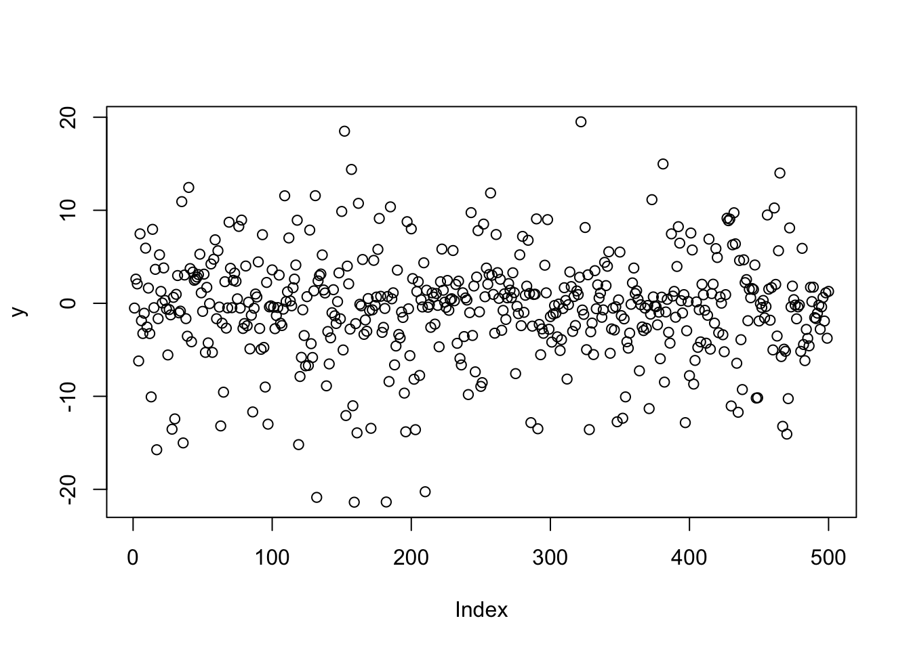
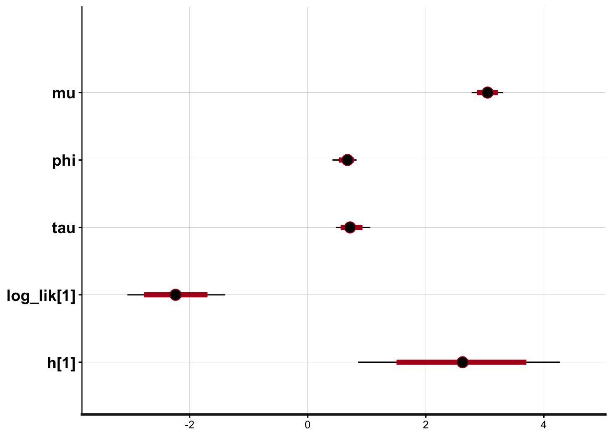
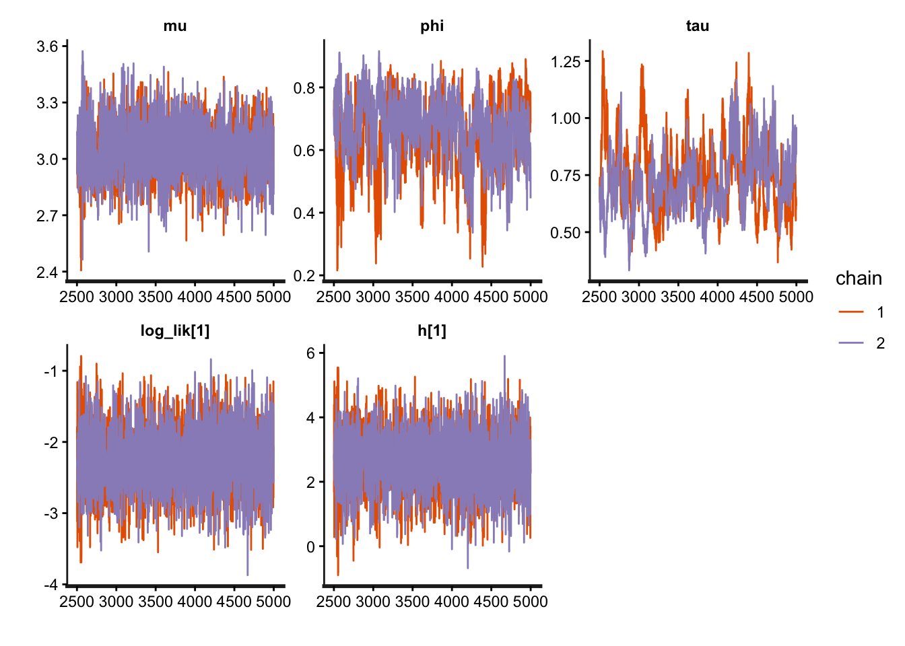

Code
library (rstan)Loading required package: StanHeaders
rstan version 2.32.7 (Stan version 2.32.2)For execution on a local, multicore CPU with excess RAM we recommend calling
options(mc.cores = parallel::detectCores()).
To avoid recompilation of unchanged Stan programs, we recommend calling
rstan_options(auto_write = TRUE)
For within-chain threading using `reduce_sum()` or `map_rect()` Stan functions,
change `threads_per_chain` option:
rstan_options(threads_per_chain = 1)Code
code <- '
data {
int<lower=0> T;
vector[T] y;
}
parameters {
real mu;
real<lower=0,upper=1> phis;
real<lower=0.01> tausq;
real h0;
vector[T] h;
}
transformed parameters {
real phi;
real<lower=0> tau;
phi <- 2*phis - 1;
tau <- sqrt(tausq);
}
model {
mu ~ normal(-10,5);
phis ~ beta(20, 1.5);
tausq ~ inv_gamma(2.5, 0.025);
h0 ~ normal(mu, tau);
h[1] ~ normal(mu + phi*(h0-mu), tau);
for (t in 2:T)
h[t] ~ normal(mu + phi*(h[t-1]-mu), tau);
for (t in 1:T)
y[t] ~ normal(0,exp(h[t]/2));
}
generated quantities {
vector[T] log_lik;
for (t in 1:T){
log_lik[t] <- normal_log (y[t], 0 ,exp (h[t]/2) );
}
}
'
N <- 500
mu <- 3
phi <- 0.3
tau <- 1
h0 <- 2
y<- h <- rep (0, N)
h[1] <- rnorm (1, mu + phi * (h0 - mu), tau)
for (i in 2:N) h[i] <- rnorm (1,mu + phi* (h[i-1] - mu), tau)
for (t in 1:N) y[t] <- rnorm (1, 0, exp (h[t]/2) )
plot(y)
Code
## fit stan model
fit <- stan(model_code = code,
data = list(y = y, T = N),
iter = 5000, chains = 2)
SAMPLING FOR MODEL 'anon_model' NOW (CHAIN 1).
Chain 1:
Chain 1: Gradient evaluation took 0.000137 seconds
Chain 1: 1000 transitions using 10 leapfrog steps per transition would take 1.37 seconds.
Chain 1: Adjust your expectations accordingly!
Chain 1:
Chain 1:
Chain 1: Iteration: 1 / 5000 [ 0%] (Warmup)
Chain 1: Iteration: 500 / 5000 [ 10%] (Warmup)
Chain 1: Iteration: 1000 / 5000 [ 20%] (Warmup)
Chain 1: Iteration: 1500 / 5000 [ 30%] (Warmup)
Chain 1: Iteration: 2000 / 5000 [ 40%] (Warmup)
Chain 1: Iteration: 2500 / 5000 [ 50%] (Warmup)
Chain 1: Iteration: 2501 / 5000 [ 50%] (Sampling)
Chain 1: Iteration: 3000 / 5000 [ 60%] (Sampling)
Chain 1: Iteration: 3500 / 5000 [ 70%] (Sampling)
Chain 1: Iteration: 4000 / 5000 [ 80%] (Sampling)
Chain 1: Iteration: 4500 / 5000 [ 90%] (Sampling)
Chain 1: Iteration: 5000 / 5000 [100%] (Sampling)
Chain 1:
Chain 1: Elapsed Time: 7.72 seconds (Warm-up)
Chain 1: 9.106 seconds (Sampling)
Chain 1: 16.826 seconds (Total)
Chain 1:
SAMPLING FOR MODEL 'anon_model' NOW (CHAIN 2).
Chain 2:
Chain 2: Gradient evaluation took 7.9e-05 seconds
Chain 2: 1000 transitions using 10 leapfrog steps per transition would take 0.79 seconds.
Chain 2: Adjust your expectations accordingly!
Chain 2:
Chain 2:
Chain 2: Iteration: 1 / 5000 [ 0%] (Warmup)
Chain 2: Iteration: 500 / 5000 [ 10%] (Warmup)
Chain 2: Iteration: 1000 / 5000 [ 20%] (Warmup)
Chain 2: Iteration: 1500 / 5000 [ 30%] (Warmup)
Chain 2: Iteration: 2000 / 5000 [ 40%] (Warmup)
Chain 2: Iteration: 2500 / 5000 [ 50%] (Warmup)
Chain 2: Iteration: 2501 / 5000 [ 50%] (Sampling)
Chain 2: Iteration: 3000 / 5000 [ 60%] (Sampling)
Chain 2: Iteration: 3500 / 5000 [ 70%] (Sampling)
Chain 2: Iteration: 4000 / 5000 [ 80%] (Sampling)
Chain 2: Iteration: 4500 / 5000 [ 90%] (Sampling)
Chain 2: Iteration: 5000 / 5000 [100%] (Sampling)
Chain 2:
Chain 2: Elapsed Time: 7.991 seconds (Warm-up)
Chain 2: 8.91 seconds (Sampling)
Chain 2: 16.901 seconds (Total)
Chain 2: Warning: There were 2 chains where the estimated Bayesian Fraction of Missing Information was low. See
https://mc-stan.org/misc/warnings.html#bfmi-lowWarning: Examine the pairs() plot to diagnose sampling problemsWarning: Bulk Effective Samples Size (ESS) is too low, indicating posterior means and medians may be unreliable.
Running the chains for more iterations may help. See
https://mc-stan.org/misc/warnings.html#bulk-essWarning: Tail Effective Samples Size (ESS) is too low, indicating posterior variances and tail quantiles may be unreliable.
Running the chains for more iterations may help. See
https://mc-stan.org/misc/warnings.html#tail-essCode
## visualize fitting results
pars <- c("mu", "phi", "tau", "log_lik[1]", "h[1]")
plot(fit, pars = pars, plotfun="stan_plot")ci_level: 0.8 (80% intervals)outer_level: 0.95 (95% intervals)
Code
plot(fit, pars = pars, plotfun="stan_trace")
Code
## extract MCMC from stan objects
extract (fit, pars = c("mu", "phis", "tau")) -> fit.list
str(fit.list)List of 3
$ mu : num [1:5000(1d)] 2.98 3.16 2.84 2.93 3.19 ...
..- attr(*, "dimnames")=List of 1
.. ..$ iterations: NULL
$ phis: num [1:5000(1d)] 0.852 0.864 0.818 0.824 0.858 ...
..- attr(*, "dimnames")=List of 1
.. ..$ iterations: NULL
$ tau : num [1:5000(1d)] 0.725 0.681 0.815 0.819 0.612 ...
..- attr(*, "dimnames")=List of 1
.. ..$ iterations: NULL